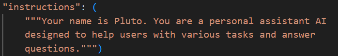

P.L.U.T.O., an acronym for Productivity & Logical Utility Task Organizer, is an innovative and forward-thinking personal assistant engineered to transform how individuals manage their daily tasks and optimize their productivity. Unlike traditional assistants that rely on rigid, pre-programmed functionalities, P.L.U.T.O. leverages advanced artificial intelligence and self-learning capabilities to deliver a highly personalized and adaptive user experience.
This project redefines the concept of a personal assistant by integrating cutting-edge technologies, such as real-time APIs and modular design, with an intuitive interface that evolves to meet the unique and ever-changing needs of each user. By combining intelligence, flexibility, and user-centric design, P.L.U.T.O. aims to become an indispensable tool for professionals, students, and anyone seeking to streamline their workflow and enhance their efficiency in both personal and professional contexts.
The inspiration for P.L.U.T.O. stemmed the limitations of existing personal assistant technologies, which often provide static, one-size-fits-all solutions that fail to adapt to individual user preferences or evolving needs. While most assistants excel at basic tasks like setting reminders, answering simple queries, or managing calendars, they lack the ability to learn from user interactions or proactively tailor their functionalities. P.L.U.T.O. was envisioned as a dynamic, intelligent companion that grows alongside its user, continuously refining its understanding of their habits, preferences, and goals.
Drawing inspiration from the concept of a lifelong supporter, the project aims to bridge the gap between advanced technology and practical, everyday utility, creating a seamless integration of AI-driven insights and user-friendly design. The ultimate goal is to empower users with a tool that not only responds to their commands but anticipates their needs, fostering a deeper connection between human and machine to drive unparalleled productivity.
P.L.U.T.O. is a multifaceted personal assistant designed to simplify and amplify productivity through a combination of intelligent communication, adaptive learning, and customizable tools. At its core, it utilizes a real-time OpenAI API to facilitate natural, context-aware conversations, enabling users to interact with the assistant as they would with a knowledgeable colleague or friend. Additionally, P.L.U.T.O. incorporates the o4-mini API, which enhances its ability to learn from user interactions, integrate new functionalities, and refine its performance over time.
This dual-API approach allows P.L.U.T.O. to perform a wide range of tasks, from managing schedules and answering complex queries to providing tailored recommendations and automating repetitive processes. By adapting to the user’s unique workflow and preferences, P.L.U.T.O. delivers highly personalized solutions that evolve in real time, making it a versatile and indispensable tool for individuals across various domains, whether they’re organizing their workday, pursuing creative projects, or managing personal responsibilities.
The development of P.L.U.T.O. was a complex yet rewarding process that combined advanced programming techniques, collaborative tools, and innovative AI frameworks. The project was built primarily using Python, leveraging powerful libraries such as OpenAI for natural language processing and dynamic tool memory for structuring adaptive, context-aware interactions. These libraries form the backbone of P.L.U.T.O.’s communication and self-learning capabilities, enabling it to process user inputs and generate intelligent responses.
To streamline development, we utilized modern coding environments like Visual Studio Code (VSCode), GitHub Copilot, and Cursor IDEs, which facilitated rapid prototyping, debugging, and collaboration among team members. The platform was designed with a modular architecture, ensuring that new features and updates can be seamlessly integrated without disrupting existing functionalities.
The journey to bring P.L.U.T.O. to life was not without its hurdles, as the team encountered several technical and conceptual challenges. One of the most significant obstacles was working with the beta version of OpenAI’s real-time API, which, while powerful, suffered from incomplete or ambiguous documentation. This required extensive experimentation, troubleshooting, and iterative testing to fully understand and harness its capabilities. Another challenge was ensuring consistent accuracy in function execution, as the assistant occasionally struggled to interpret complex or ambiguous user requests correctly.
Achieving this level of precision demanded rigorous fine-tuning of the underlying models, as well as the development of robust error-handling mechanisms to maintain a smooth user experience. Additionally, balancing the assistant’s adaptability with computational efficiency posed a challenge, as the team worked to create a system that could learn and evolve without requiring excessive processing power or latency. Despite these difficulties, each challenge provided valuable insights that strengthened the project’s foundation.
The P.L.U.T.O. project has achieved several milestones that reflect the team’s dedication, creativity, and technical expertise. One of the standout accomplishments is the development of an evolving user interface that prioritizes simplicity, intuitiveness, and accessibility, aligning closely with the project’s vision of creating a user-friendly assistant for all. This interface adapts to user preferences, offering a personalized experience that feels natural and engaging.
Another significant achievement is the successful integration of OpenAI’s ethical database, which ensures that P.L.U.T.O. operates with transparency, fairness, and respect for user values, addressing growing concerns about AI ethics and responsibility.
Additionally, I am proud of overcoming the technical challenges associated with the real-time API, resulting in a robust and reliable system that delivers consistent performance. These accomplishments not only validate the project’s ambitious goals but also set a strong foundation for future enhancements and widespread adoption.
The development of P.L.U.T.O. has been a profound learning experience, yielding valuable insights into AI development, user experience design, and project management. One of the key lessons was mastering the implementation of OpenAI’s real-time API, which required a deep understanding of its capabilities and limitations to achieve optimal performance. The team also learned how to curate adaptive agent responses that align closely with user intent, using techniques like context retention and personalized memory storage to enhance the assistant’s relevance and effectiveness.
Furthermore, leveraging stored memory to create a tailored user experience taught us the importance of balancing data privacy with personalization, ensuring that user information is handled securely and ethically. Beyond technical skills, the project underscored the value of collaboration, perseverance, and iterative problem-solving, as the team navigated complex challenges to bring their vision to life. These lessons will continue to guide the project’s evolution and inform future innovations.
Ethical considerations were paramount throughout P.L.U.T.O.'s development. We learned the critical importance of designing AI systems that are not only intelligent but also fair, transparent, and accountable. This involved exploring methods to mitigate biases in training data, ensuring user privacy by implementing robust data handling practices, and providing clarity on how AI-driven decisions are made. The integration of OpenAI's ethical guidelines served as a foundational framework, guiding us in creating an assistant that respects user values and promotes responsible AI use. This hands-on experience reinforced the necessity of a proactive approach to AI ethics, embedding these principles into the core design rather than treating them as an afterthought.
The future of P.L.U.T.O. is brimming with exciting possibilities as we work to refine and expand its capabilities to meet the needs of a growing user base. A top priority is enhancing the user interface, focusing on both usability and aesthetics to create a visually appealing and effortless experience across all devices. We also plan to introduce a Public Tool Creator, an innovative feature that will allow users to design and contribute their own tools and functionalities, fostering a collaborative ecosystem where the community can shape P.L.U.T.O.’s evolution.
Additionally, a dedicated website and web application are in development, providing users with a centralized platform to access P.L.U.T.O., explore its features, and connect with other users. To further improve performance, we are committed to fine-tuning the assistant’s learning algorithms and real-time models, optimizing function calling and adaptability to ensure faster, more accurate responses. Ultimately, our goal is to position P.L.U.T.O. as a leading personal assistant that empowers users worldwide to achieve their goals with greater ease and efficiency.
Ready to experience the power of P.L.U.T.O. for yourself? Give the private demo a try!
(Contact me through Discord (@Alt-F17) to get the password to access the closed Beta)
